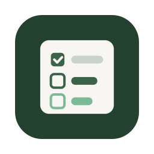

Applications macOS

Kodama
Une application de streaming de Web Radio pour la barre des menus. Elle lit vos stations, enregistre les morceaux diffusés, et vous laisse choisir ceux à sauvegarder.
macOS 14+ · gratuit
Kumoji
Un menulet pour monter vos remotes rclone. Prise en charge des configurations chiffrées, et du mot de passe gardé derrière TouchID. Nécessite rclone et une configuration rclone existante.
macOS 13+ · gratuitPlugins Omarchy
Des widgets pour la barre d'Omarchy, le bureau Linux bâti sur Arch et Hyprland. Ils suivent le thème et la langue d'Omarchy, en français comme en anglais.

Agenda
Votre prochaine réunion à côté de l'horloge et, d'un clic, l'agenda des jours qui viennent, avec un bouton pour rejoindre Teams, Zoom ou Meet. Lit le lien ICS publié par Outlook / Microsoft 365, Google ou iCloud, sans connexion à un compte : il se colle dans l'écran de réglages, qui règle aussi le nombre de jours affichés.
Omarchy · gratuit
rclone mounter
Le pendant Linux de Kumoji : vos remotes rclone, un interrupteur chacun, montés en cache complet, en streaming ou en lecture seule. Prend en charge les configurations chiffrées, avec le mot de passe gardé dans le trousseau.
Omarchy · gratuit
Obsidian Tasks
Vos tâches Obsidian dans la barre : la plus urgente du jour s'affiche à côté de l'horloge et, d'un clic, la liste pour cocher, changer un statut ou ajouter une tâche sans ouvrir Obsidian. Suit la convention du plugin Tasks, avec un écran de réglages pour choisir les notes à suivre.
Omarchy · gratuitPour installer un plugin, une commande suffit :
omarchy plugin add https://github.com/snouhaud/omarchy-agenda.git --enable
omarchy plugin add https://github.com/snouhaud/rclone-mounter.git --enable
omarchy plugin add https://github.com/snouhaud/obsidian-tasks.git --enable